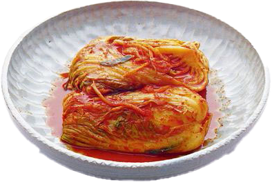

Kimchi (Nappa Cabbage Kimchi)
김치

Korea.net / Korean Culture and Information Service
(Photographer name), CC BY-SA 2.0, via Wikimedia
Commons
A recipe by
mykoreankitchen.com
Kimchi is a type of fermented food that originates from Korea. Kimchi's name varies depending on the main
vegetables used. Here, you will find my best napa cabbage kimchi recipe made in pogi kimchi (whole cabbage kimchi)
style.
Ingredients
Main
- 4 kg napa cabbage (8.8 pounds), remove thick outer cabbage leaves
- 16 cups water (3840 ml)
- 1.5 cups Korean coarse sea salt or natural rock salt (for salt water), (285g / 10 ounces)
- 1/2 cup cooking salt , medium sized crystals (for sprinkle), (97g / 3.4 ounces)
Kimchi Seasoning / Kimchi Paste
- 2 Tbsp glutinous rice flour (sweet rice flour)
- 1.5 cups water (360 ml)
- 1.5 cups gochugaru (Korean chili flakes), (141g / 4.97 ounces)
- 540 g Korean radish or daikon radish (19 ounces), julienned
- 1 Tbsp fine sea salt
- 3.5 Tbsp Korean fish sauce
- 2 Tbsp salted fermented shrimp , minced
- 90 g Korean chives (3.2 ounces), cut in 5 cm / 2 inch length
- 140 g carrots (4.9 ounces), julienned
- 1/4 cup minced garlic (42g / 1.48 ounces)
- 1/2 Tbsp minced ginger
- 2 Tbsp raw sugar
- 75 g onion (2.6 ounces), blended (with a stick blender or vegetable chopper) or finely grated
Instructions
- Cut the napa cabbage into quarters and rinse it in running water. Make sure the stem is intact.
-
Dissolve the coarse salt in the water (16 cups) in a large bowl. Dip the napa cabbage in the saltwater one at a
time and transfer it onto a tray for further salting.
Pinch some cooking salt (1/2 cup total for all pickled cabbages) and rub over the thick white part of the
cabbage. Open each leaf gently and sprinkle the salt over the thick white part. Repeat this for the rest of the
cabbage. Reserve the saltwater from when you soaked the cabbage for later use.
-
Put the salted cabbage in a large food grade plastic bag or large bucket (wedge side of the cabbage to be
facing up) and pour in the reserved saltwater from step 2. Close the plastic bag. If using a bucket, get
something heavy on top of the cabbage to press down (e.g heavy pot with water).
Set the cabbage aside for 6 hours to pickle. Rotate the cabbage upside down every 2 hours. Using a large food
grade plastic bag will make the turning process much easier than using a large bucket.
- Once the soaking process is finished, rinse the cabbages in running water, especially the thick white part of
the cabbage, to get rid of the salt. Place them in a colander and allow to drain for 1 hour.
- While waiting, prepare the glutinous rice paste. Mix glutinous rice flour with the water (1.5 cup) in a saucepan
and boil it over medium heat for 5-8 minutes, until it thickens. Once ready, transfer the rice paste to the
medium-size bowl and let it cool. Add Korean chili flakes once it has cooled. Then, combine them well.
- Prepare a large mixing bowl and add radish, fine sea salt, Korean fish sauce, and salted shrimp. Leave it for 10
minutes for the radish to salt down. Add Korean chives, carrots, minced garlic, minced ginger, sugar, blended
onion, and the Korean chili flakes mixture from step 5. Mix them well. Now the kimchi seasoning / kimchi paste is
made, ready for use.
- Place a quarter of a cabbage on a tray. Spread the seasonings over each leaf. (You only need to season one side
of the leaf.) 1 to 2 small fistfuls of seasoning is enough per quarter of cabbage. Repeat this step for the rest
of the cabbage. Don’t pull the cabbage leaves off the stem, leave them attached so it holds together better.
-
Transfer the kimchi into a kimchi container or an airtight container (and put the lid on). Leave it out at room
temperature for 24 hours, then move it to the refrigerator. While you can start eating it once it’s chilled, you
may want to wait 3-4 more days for it to develop more flavor.
{kind=link}